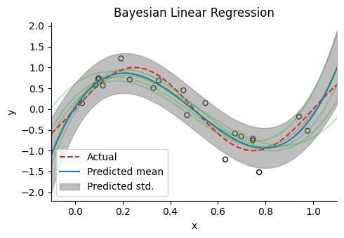

ベイズ線形回帰 (Bayesian linear regression)
ベイズ線形回帰 (Bayesian linear regression)¶
using Base: @kwdef
using Parameters: @unpack
using PyPlot, LinearAlgebra, Random, Distributions
rc("axes.spines", top=false, right=false)
# Generate Toy datas
num_train, num_test = 20, 100 # sample size
dims = 4 # dimensions
σy = 0.3
polynomial_expansion(x; degree=3) = hcat([x .^ p for p in 0:degree]...);
Random.seed!(0);
x = rand(num_train)
y = sin.(2π*x) + σy * randn(num_train);
ϕ = polynomial_expansion(x, degree=dims-1) # design matrix
xtest = range(-0.1, 1.1, length=num_test)
ytest = sin.(2π*xtest)
ϕtest = polynomial_expansion(xtest, degree=dims-1);
conjugate prior
\[
p(\mathbf{w})=\mathcal{N}(\mathbf{w}|\boldsymbol{\mu}_0, \mathbf{\Sigma}_0)
\]
posterior
\[
p(\mathbf{w}|\mathbf{Y}, \mathbf{X})=\mathcal{N}(\mathbf{w}|\hat{\boldsymbol{\mu}}, \hat{\mathbf{\Sigma}})
\]
ãŸã ã—，
\[\begin{split}
\begin{align}
\hat{\mathbf{\Sigma}}^{-1}&= \mathbf{\Sigma}_0^{-1}+ \beta \Phi^\top\Phi\\
\hat{\boldsymbol{\mu}}&=\Sigma_N (\mathbf{\Sigma}_0^{-1}\boldsymbol{\mu}_0+\beta \Phi^\top \mathbf{y})
\end{align}
\end{split}\]
である．また，\(\Phi=\phi.(\mathbf{x})\)であり，\(\phi(x)=[1, x, x^2, x^3]\)とする．
ここで\(\boldsymbol{\mu}_0=\mathbf{0}, \mathbf{\Sigma}_0= \alpha^{-1} \mathbf{I}\)とする．\(\alpha=0, \beta=1\)ã®ã¨ã，æ£è¦æ–¹ç¨‹å¼ã¨åŒã˜ã«ãªã‚‹ã“ã¨ã‚’確èªã—よã†ï¼
テストデータを\(\mathbf{x}^*\)とした際，予測分布は
\[
p(y^*|\mathbf{x}^*, \mathbf{Y}, \mathbf{X})=\mathcal{N}(y^*|\boldsymbol{\mu}^*, \mathbf{\Sigma}^*)
\]
ã¨ãªã‚‹ï¼ãŸã ã—，
\[\begin{split}
\begin{align}
\boldsymbol{\mu}^*&=\hat{\boldsymbol{\mu}}^\top \phi(\mathbf{x}^*)\\
\mathbf{\Sigma}^* &= \frac{1}{\beta} + \phi(\mathbf{x}^*)^\top\hat{\mathbf{\Sigma}}\phi(\mathbf{x}^*)\\
\end{align}
\end{split}\]
@kwdef mutable struct BayesianLinearReg
μ̂::Array
Σ̂::Array
end
# Training params & definition of model
function BayesianLinearReg(ϕ, y, α, β)
Σ̂ = inv(α * I + β * ϕ' * ϕ)
μ̂ = β * Σ̂ * ϕ' * y;
return BayesianLinearReg(μ̂=μ̂, Σ̂=Σ̂)
end;
function predict(ϕ, blr::BayesianLinearReg, β)
@unpack μ̂, Σ̂ = blr
μp = ϕ * μ̂
σp = sqrt.(1/β .+ diag(ϕ * Σ̂ * ϕ'));
return μp, σp
end;
function sampling_func(ϕ, blr::BayesianLinearReg, num_sampling)
@unpack μ̂, Σ̂ = blr
dist = MvNormal(μ̂, Matrix(Hermitian(Σ̂)))
sampled_params = rand(dist, num_sampling);
return ϕ * sampled_params
end;
α, β = 1e-3, 5.0;
blr = BayesianLinearReg(ϕ, y, α, β);
μtest, σtest = predict(ϕtest, blr, β);
num_sampling = 5
sampled_func = sampling_func(ϕtest, blr, num_sampling);
figure(figsize=(5,3.5))
title("Bayesian Linear Regression")
scatter(x, y, facecolor="None", edgecolors="black", s=25) # samples
plot(xtest, ytest, "--", label="Actual", color="tab:red") # regression line
plot(xtest, μtest, label="Predicted mean", color="tab:blue") # regression line
fill_between(xtest, μtest+σtest, μtest-σtest, alpha=0.5, color="tab:gray", label="Predicted std.")
for i in 1:num_sampling
plot(xtest, sampled_func[:, i], alpha=0.3, color="tab:green")
end
xlabel("x"); ylabel("y"); legend()
xlim(-0.1, 1.1); tight_layout()

┌ Warning: `vendor()` is deprecated, use `BLAS.get_config()` and inspect the output instead
│ caller = npyinitialize() at numpy.jl:67
└ @ PyCall C:\Users\yamta\.julia\packages\PyCall\3fwVL\src\numpy.jl:67